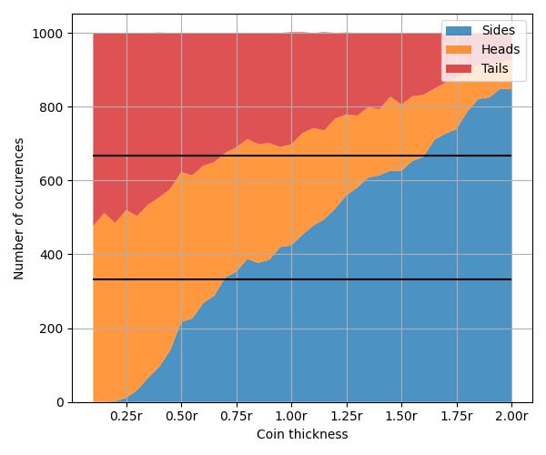

Intro
A coin effectively has 2 sides, heads or tails. Still, there's a chance — albeit small — that the coin can land on it's edge. This begs the question, how 'thick' should a coin be so that it has equal chances of landing on any of the 3 sides (Heads, Tails, or Edge).
I learned about this problem in this video by Matt Parker, who looks at some mathematical ways to solve it. Instead of relying on maths or 'thinking' (pfft), why not just simulate it? We can vary the thicknesses of coins and see how that changes the chances of heads, tails and sides. We can also vary their coefficients of restitution (bounciness), how much we spin the coins, and other things and see how that affects our results too!
We'll try to work out the ideal thickness of the coin in terms of it's radius (\(r\)).
Coin thickness?
Well that's neat looking, but what does it tell us? Well, we can see how changing the thickness of a coin changes the number of heads, tails and sides rolled. The 'ideal' 3 sided coin has equal chance of each of these 3 things.

Figure 1: The number of heads, tails and sides over 1000 flips with different coin thicknesses, black lines show 3rds. For all trials the coin restitution is kept at 0.15.
Ok… Zoom and enhance! Running over 10x as many flips this time….
Figure 2: The exact same as above, but over just thicknesses from 0.75r to 0.95r.
It seems our ideal coin has a thickness of \(0.85r\)! That's the point where there's exactly 1/3rd chance of heads, 1/3rd chance of tails, and 1/3rd chance of sides.
Does the maths agree?
Matt Parker's video (linked above) essentially discusses two solutions, each providing slightly different answers.
The first considers the coin as inscribed in a sphere. There's equal chance that any point on the sphere could be touching the ground, and so what's the dimensions of the coin such that it divides the area of the sphere perfectly into 3… This gives \(t = \frac{r}{\sqrt{2}} \approx 0.707r\).
The second approach thinks of the coin as being placed on the ground at a random angle. We can ignore one axis of rotation, and think of it as a box. The box will either tip towards heads/tails or sides based on the center of gravity. This gives the thickness, \(t\) as \(t = \frac{2r}{\sqrt{3}} \approx 1.154r\).
And simulating it gives an answer of \(0.85r\)?? Right in the middle… The second approach interestingly works in our simulation, if we ignore the fact the coin may move. Try entering a coin with a thickness \(1.15r\), and \(0\) for restitution and spin. (Note: This is due to a simplification of how random coin rotations are sampled and may not be entirely correct.)
The end of the story?
So… we're done? The answer is \(0.85r\)? Not quite… There are a lot of other properties that go into a coin. All sides are identical on a regular die, and so we'd get a random result simply from a random starting rotation. This isn't true for our 3 sided coin however. Importantly, landing on the side of a coin leaves the center of gravity higher up. It could make sense that a coin which bounces around is more likely make it out of this 'local minima'… Lets test it!
Figure 3: How the bounciness of a coin affects the outcome. The thickness of these coins are kept the same at \(0.85r\).
That's a strange curve! It looks like pepsi… But also, it seems bouncy coins are less likely to land on their side — At least up to a point. Interesting!
What about the throw spin? Can you bias a 3 sided coin by throwing it with more or less spin? Maybe something similar applies. The coin is thrown starting at a random angle, so this shouldn't affect anything… In theory. We change the maximum throw spin, and each coin's spin is randomly sampled less than this.
Figure 4: What's going on?? The chance of sides changes dramatically with increased spin on the coin.
Nope! The opposite happens. More spin seems to make the coin more likely to land on it's side. With low spin the coin seems likely to bounce once and then land on a face. As the spin increases there actually becomes more of a chance to land on it's side since the coin can reach it in more ways. Rather than needing to perfectly hit the 'double bounce' on the side, they instead often 'roll' up to sit on the edge. At high spins the coins seem to somehow spin up to sit on the edge fairly consistently. Try it!
Maybe this could be a useful trick… Get your friends to pick between heads/tails or sides of your coin, then change how you throw it accordingly. A gentle toss if you want sides or lots of spin for faces.
Disclaimer!
The results on this page are only as good as the physics simulation is. This page uses Oimo.js for physics, but more accurate results could likely be found using an offline and more advanced/complete engine like physx or bullet.
Also, picking truly random rotations is hard. Surprisingly hard. This simulation makes some approximations for what a random rotation for a coin looks like (similar to those made in Matt's video) that should be sufficient, at least given how chaoitic the movement is… But mightn't satisfy those looking for a perfect sampling of \(SO(3)\) :). You're welcome to dig through the source code for the simulation (and rest of the site) either here in the debug console or on my github and check I'm doing things right!
Conclusion
After all, it doesn't seem possible to make an always-fair 3 sided coin! I hope you had fun making very thick, thin or very fast spinning coins at least…